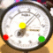

Nicla Vision Development Guide
Develop Nicla Vision applications for context-aware physical spaces using OpenMV and Bluetooth Low Energy.

The TL;DR (Too Long; Didn't Read)
Learn how to program a Nicla Vision board with existing applications, or develop your own.
- What's Nicla Vision?
- Nicla Vision is Arduino Pro's ready-to-use, standalone intelligent camera with Bluetooth Low Energy (BLE) and WiFi connectivity.
- What will this accomplish?
- The Nicla Vision will share its edge-processed vision and sensor data wirelessly using BLE advertising packets.
- Is there an easier way?
- Programming the Nicla Vision from the OpenMV IDE using sample applications is already incredibly easy.
Prerequisites
A Nicla Vision and, optionally, a Pareto Anywhere instance creating a context-aware space
-

-
Buy a Nicla Vision* from the Arduino Store
Support the ongoing development of the Arduino open source hardware ecosystem!* a standard USB A to micro-B cable is required—but not included!
-

-
[OPTIONAL] Run Pareto Anywhere on a PC
Install and run Pareto Anywhere on a personal computer to make any physical space context-aware.
-

-
[OPTIONAL] Run Pareto Anywhere on a Raspberry Pi
Install and run Pareto Anywhere on a Pi to make any physical space context-aware.
Connecting to the Nicla Vision Step 1 of 4
Connect with the Nicla Vision in the OpenMV IDE.
- What's OpenMV?
- The OpenMV project is about creating low-cost, extensible, Python powered, machine vision modules and aims at becoming the "Arduino of Machine Vision".
- What's an IDE?
- An Integrated Development Environment facilitates the development and testing of code, in this case directly on the Nicla Vision itself.

Prerequisites
Update to the latest bootloader and install OpenMV
Follow the official Getting Started with Nicla Vision guide, specifically the following steps:
- Bootloader Firmware Update don't skip this step!
- Downloading the OpenMV IDE
Connect the antenna and USB cable Part 1
The Nicla Vision ships with an external 2.4/5GHz antenna for BLE & WiFi connectivity. Install this antenna by carefully aligning the connector and applying sufficient pressure for it to snap into place.
Note that once connected, the antenna should only be removed using a specialised tool, in order not to damage the connector.
Choose a USB A to micro-B cable of sufficient length to allow the camera to be pointed at subjects of interest while tethered. Connect the micro-B end to the Nicla Vision and the other end to the laptop.

Connect in the OpenMV IDE Part 2
Run the OpenMV IDE on your laptop. The default view should resemble the following. Annotations have been added to highlight key features.

Click the Connect icon to connect to the Nicla Vision via USB. If prompted to update the firmware on the Nicla Vision, go ahead and do so.
The OpenMV IDE footer will display information about the device which is currently connected, in this case the Nicla Vision with the GC2145 sensor.

The Nicla Vision can now be programmed via the OpenMV IDE, which is the subject of the next step.
Programming the Nicla Vision Step 2 of 4
Load a Python file and run it on the Nicla Vision.
- Why Python?
- OpenMV uses the MicroPython operating system to run Python 3 scripts, which make working with machine vision algorithms much easier.
- Any documentation?
- Yes, consult the MicroPython for OpenMV documentation to learn more.

From the OpenMV IDE connected to the Nicla Vision:
Run "helloworld.py" Part 1
The OpenMV IDE should open a helloworld.py file by default. Click the Start (run script) icon at the bottom left of the IDE to run this script on the Nicla Vision.
Show the Serial Terminal to observe the number of frames per second (fps) printed to the console. Show the Frame Buffer to observe what the camera sees, as well as the Histogram of the colour space.

Click the Stop (halt script) icon at the bottom left of the IDE to stop running this script on the Nicla Vision.
Run "hellomaxfov.py" Part 2
Access the full field of view (FoV) of the Nicla. Open a new file in the OpenMV IDE, and copy Ctrl+C and paste Ctrl+V the following lines of code into the code editor window:
import sensor, image
sensor.reset()
sensor.ioctl(sensor.IOCTL_SET_FOV_WIDE, True) # Maximise the FoV
sensor.set_pixformat(sensor.RGB565)
sensor.set_framesize(sensor.QVGA) # Select QVGA for maximum FoV
sensor.skip_frames(time = 2000)
while(True):
img = sensor.snapshot()
Click the Start (run script) icon at the bottom left of the IDE to run this script on the Nicla Vision.
Observe in the IDE the framebuffer with the full 80° field of view of the Nicla Vision's GC2145 sensor.
Run "helloadvertising.py" Part 3
Advertise user-defined Bluetooth Low Energy wireless packets. Open a new file in the OpenMV IDE, and copy Ctrl+C and paste Ctrl+V the following lines of code into the code editor window:
import bluetooth, time
# Advertising payload bytes:
# 0: 0x06 = Length (not including the length byte itself)
# 1: 0x09 = Complete Local Name (from GAP)
# 2-6: 'Nicla' = Name (as ASCII characters)
_ADV_PAYLOAD = [ 0x06, 0x09, ord('N'), ord('i'), ord('c'), ord('l'), ord('a') ]
_ADV_INTERVAL_US = 500000
ble = bluetooth.BLE()
ble.active(True)
ble.gap_advertise(_ADV_INTERVAL_US, adv_data=bytearray(_ADV_PAYLOAD))
while(True):
time.clock().tick()
Click the Start (run script) icon at the bottom left of the IDE to run this script on the Nicla Vision.
Observe in Pareto Anywhere, or from any Bluetooth Low Energy scanning mobile app, a device named Nicla. This is the Nicla Vision advertising its name to any devices in range.

Combine machine vision and BLE Part 4
Example to come.
Running other programs Step 3 of 4
Explore the potential of the Nicla Vision in context-aware physical spaces.
- What are context-aware physical spaces?
- These are spaces that make sense of who/what is where/how by collecting and processing ambient wireless data, like that advertised by the Nicla Vision.
- Why use Nicla Vision?
- The Nicla Vision, combined with OpenMV, facilitates the development of custom machine-vision applications using BLE as a data transport, so that data can be automatically be interpreted in context-aware physical spaces.

Gauge Reader Code
Load our nicla-vision-gauge-reader code to interpret and transmit analogue gauge level data that can be observed in Pareto Anywhere's APIs and web apps, as detailed in the following tutorial:
- 
-
Configure a Nicla Vision Gauge Reader
Our step-by-step guide to create a wireless gauge reader using OpenMV on the Nicla Vision.
Powering the Nicla Vision Step 4 of 4
Choose the power source best suited for the application.
- Can it run on batteries?
- Yes, the Nicla Vision can be powered from a USB power bank, standard dry cell batteries, or Li-Po/Ion packs.
- How much autonomy?
- This depends on the capacity of the battery and the power consumption of the program that is running.

USB Connector Option 1
Power from the USB connector is prioritised over the ESLOV and the Battery Connector.
The Nicla Vision can be powered via USB, either via connection to a laptop, or from a standard USB power bank.
ESLOV Connector (J5) Option 2
Power from the ESLOV is prioritised over the Battery Connector.
The Nicla Vision can be powered from the ESLOV Connector (J5) which nominally expects 5VDC, but can accept the range of voltages supported on the VIN pin* to which the ESLOV is diode-connected. For instance, it is possible to power the Nicla Vision via the ESLOV with 3 x 1.5V batteries (ex: AAA, AA, C or D) using commercially-available 3-cell battery holders.
*The datasheet specifies 3.5V-5.5V as recommended operating conditions.

It is possible to create an ESLOV power cable from scratch using the following parts:
- JST connector SHR-05V-S-B Buy on DigiKey
- JST jumper lead ASSHSSH28K152 Buy on DigiKey
Cut the cable in half, and carefully feed the ends into the first and last slot of the plug, observing the orientation such that each metal tab locks into place. Indicate Pin 1 (positive) with a red permanent marker, and take care to observe the polarity when connecting/soldering to a battery holder or alternative power source.

Battery Connector (J4) Option 3
The Nicla Vision can be powered from the Battery Connector (J4) using a single-cell 3.7 V Li-Po or Li-Ion battery. See this tutorial for details.


Tutorial prepared with ♥ by jeffyactive.
You can reelyActive's open source efforts directly by contributing code & docs, collectively by sharing across your network, and commercially through our packages. We invite you to sponsor OpenMV too!Where to next?
Continue exploring our open architecture and all its applications.
-

-
Directory of Devices
Browse all device configuration tutorials and development guides.
-

-
reelyActive Developers
Browse all developer documentation and tutorials.
-

-
reelyActive
Together, let's make sense of things.